Where the old Engine Wire plugs into the kept harnesses
One joint group at a time. Each group shows where it sits in the car, the connector face, the wiring-diagram page, and every wire end to end: connector, pin, colour.
Status 2026-10-25. Every box is decided (tags below). The "R/B No.4 routes" section is from before R/B No.4 was kept, so it is superseded: R/B No.4 stays with one new feed wire and its own starter relay. "Cut + cap" now means remove the dead wire back to its last live point. Group 3 (IG1 / IG2) is done; its table is in the repo at docs/harness/cut-list/.
Map · book p.18
Where the boxes are
Engine bay (top): J/B No.2, R/B No.5 and the ABS relay box all go. Dash (bottom): J/B No.1, J/B No.3, R/B No.2 and No.4 stay; R/B No.3 goes (no fog lights). The A/C amplifier A15 sits behind the glove box, next to R/B No.4.
Rule B9: forward of the firewall every wire is new, on a named route. Every joint below goes dead, and anything a kept box still needs gets fed from the cabin side.
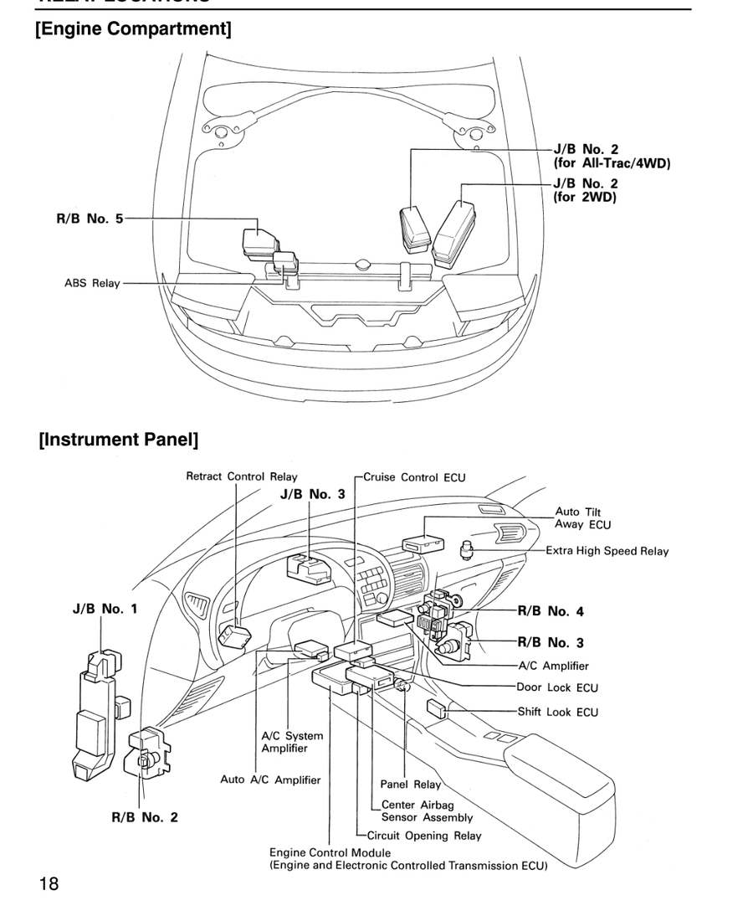
BOOK P.18Relay locations. 1993 EWD.
The 7 OEM boxes · book p.18 to 27
J/B and R/B, one by one
J/B = junction block (fuses, relays and wire joins). R/B = relay block (a few relays, sometimes fuses). Toyota numbers them in no useful order, so here is each one with where it sits and what it does.
J/B No.1
Dash fuse box · left kick panel
Stays (B9)
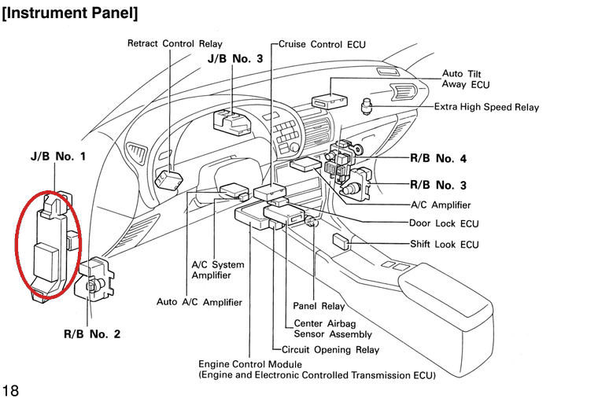
P.18 Driver's left kick panel.
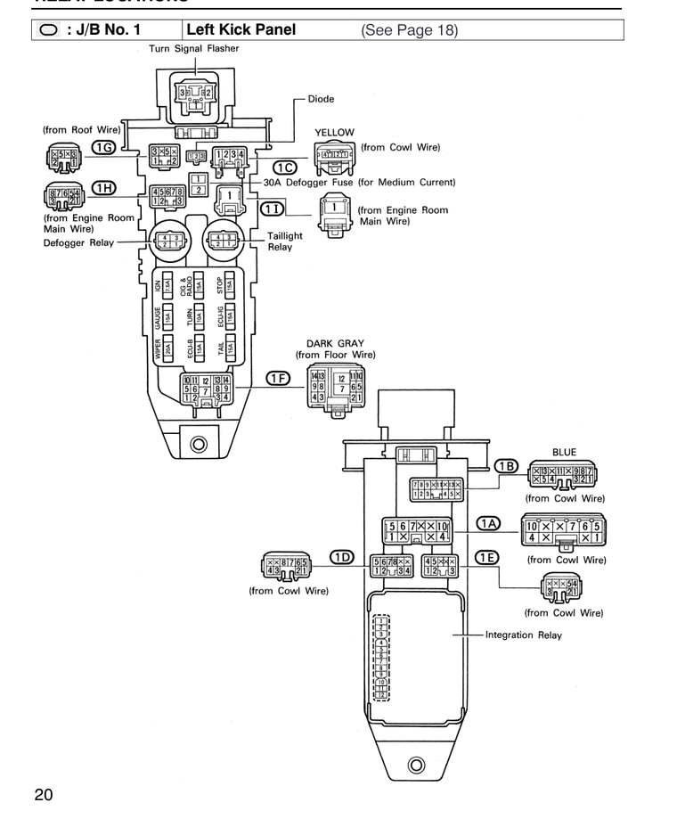
P.20 Plugs 1A to 1I.
Inside: the dash fuses (IGN, GAUGE, WIPER, CIG/RADIO, TURN, ECU-B, ECU-IG, STOP, TAIL), the taillight and defogger relays, 30A defogger fuse, turn flasher, integration relay. Fed by: plug 1I. That is group 2: new feed from the glove box.
J/B No.3
Wire junction · behind the gauge cluster
Stays (B9)
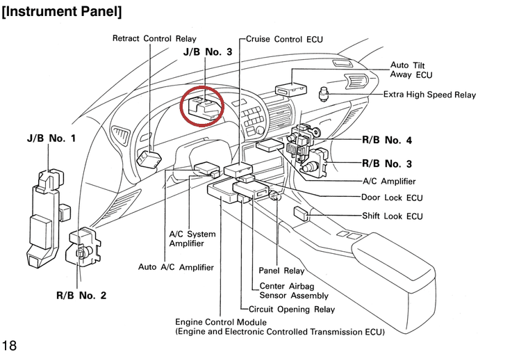
P.18 Behind the gauge cluster.
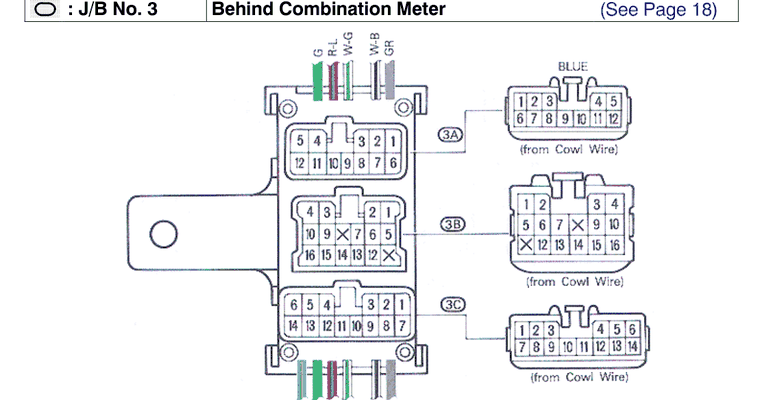
P.25 Plugs 3A, 3B, 3C.
Inside: no fuses or relays. It only joins cowl-wire circuits behind the dash.
R/B No.2
Power-accessory relay · left kick panel, under J/B No.1
Stays (one new feed)
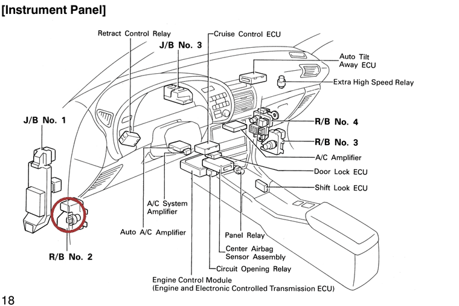
P.18 Below J/B No.1.
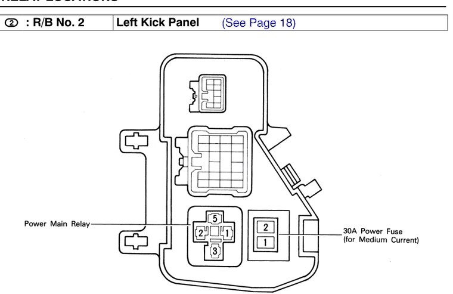
P.26 Power main relay, 30A POWER fuse.
Inside: power main relay + 30A POWER fuse. Runs power windows, door locks, sunroof, power seat. Fed by: AM1, which came through the Engine Wire, so it needs a new feed either way. Glove-box twin already designed:k_pwr.
R/B No.3
Fog light relay · right kick panel
Goes (no fog lights)
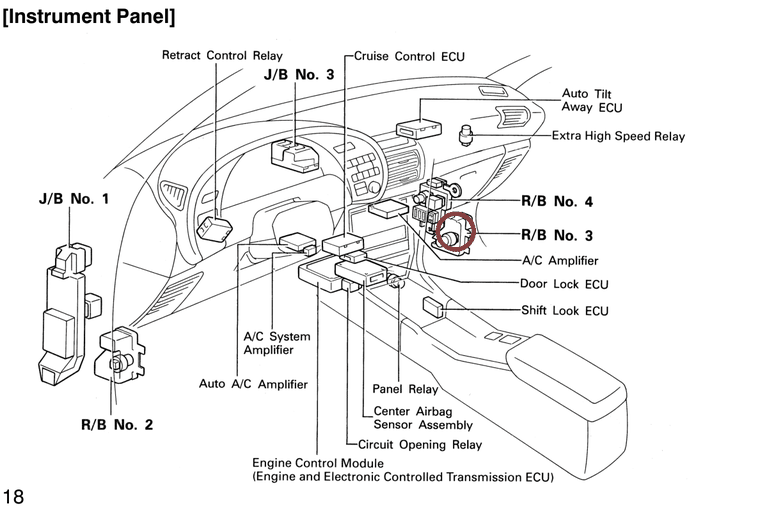
P.18 Right kick panel, lower.
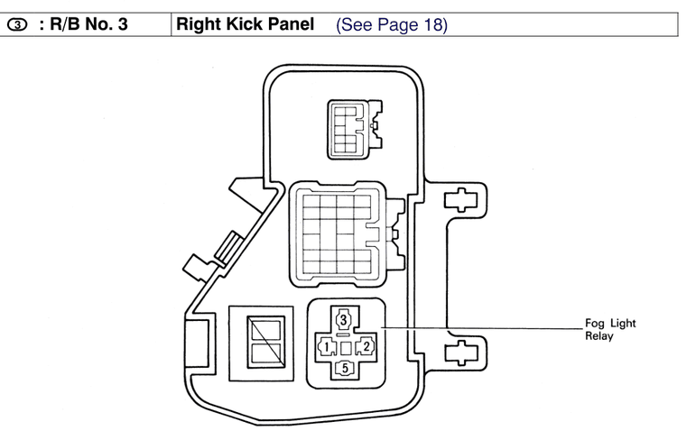
P.26 Fog light relay only.
Inside: the fog light relay, nothing else. Its power came from the 20A FR FOG fuse in R/B No.4. Glove-box twin: none yet (spare micro relays M8 to M10 exist).
R/B No.4
Starter, blower and A/C fuses · right kick panel
Stays (one new feed)
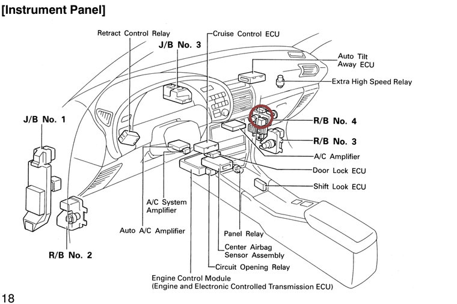
P.18 Right kick panel, upper, by the glove box.
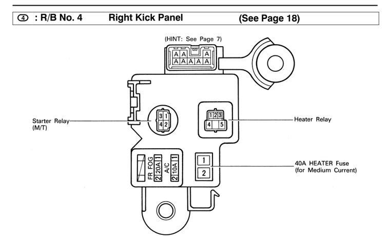
P.27 Starter relay, heater relay, 3 fuses.
Inside: starter relay, heater (blower) relay, 40A HEATER, 20A FR FOG and 10A A/C fuses (the A/C fuse powers both A/C amps). Fed by: EB1 pin 3 (group 1). Glove-box twins already designed:k_str, k_htr. FOG and A/C would need slots.
J/B No.2
Engine-bay fuse box · left front, by the battery
Goes
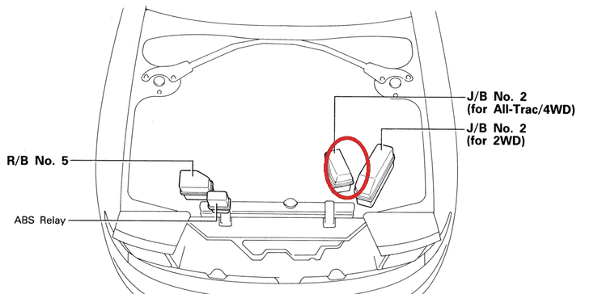
P.18 Left front, by the battery (All-Trac version).
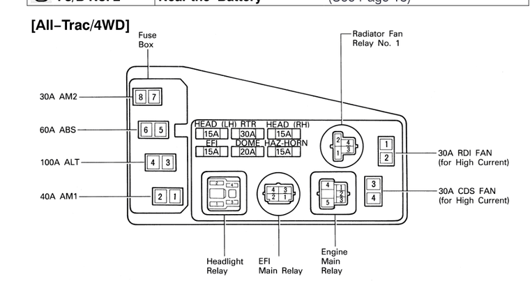
P.23 Main fuses and engine relays.
Inside: main fuses (100A ALT, AM1, AM2, 60A ABS), HEAD LH/RH, RTR, EFI, DOME, HAZ-HORN, radiator and condenser fan fuses, headlight relay, EFI main relay, engine main relay, radiator fan relay. Every job moves to the glove-box boxes.
R/B No.5
Engine-bay relay box · front right
Goes
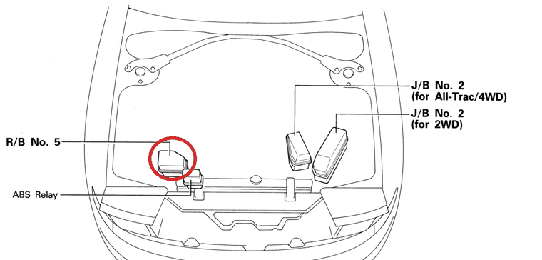
P.18 Front right. The little "ABS Relay" box beside it goes with ABS.
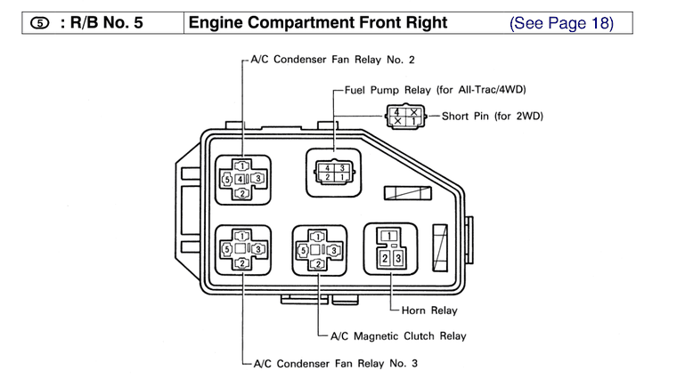
P.27 5 relays.
Inside: A/C magnetic clutch relay, horn relay, condenser fan relays No.2 and No.3, fuel pump relay. This is the box with the A/C clutch relay; check at the car that it is the "small A/C clutch relay box" you meant.
Box routes · 1 of 5 · old vs new · SUPERSEDED 2026-10-21: R/B No.4 stays
R/B No.4: every wire, old route and new route
Old OEM routeNew route if R/B No.4 goesNumbers = circuits in the table. Paths are best fit on the FSM art, not measured.
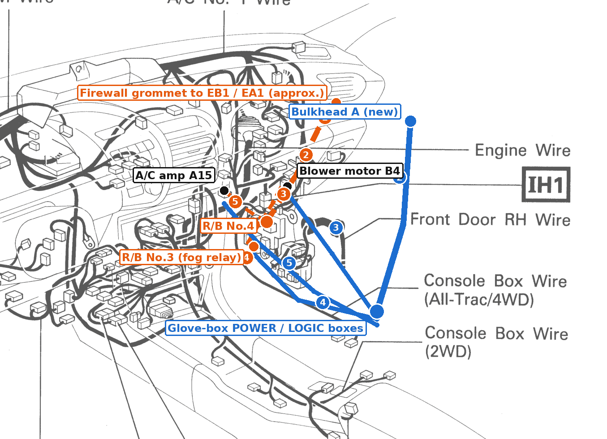
BOOK P.42Inside the dash (passenger side). Old: everything hangs off R/B No.4 and leaves through the RH firewall grommet. New: each job starts at the glove-box boxes.
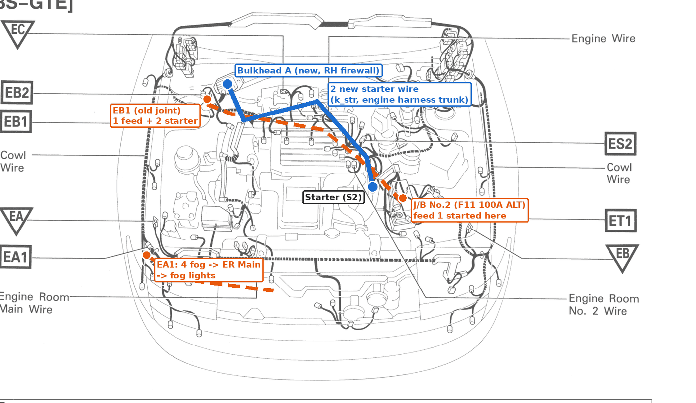
BOOK P.36Engine bay. Old: R/B No.4's feed came from J/B No.2 across the engine (Engine Wire) to EB1, and the starter signal went back the same way. New: one wire from bulkhead A down the new engine-harness trunk to the starter.
k_str → bulkhead A → engine-harness trunk → starter (already decided either way)
3
Blower motor
R/B4 heater relay → blower B4
k_htr → blower B4
Unchanged OEM
4
Fog lights
R/B4 FOG fuse → R/B3 fog relay → grommet → EA1 → ER Main → fog lights
LOGIC spare relay M8 → R/B3's old output wire → EA1 → fog lights
Unchanged OEM
5
A/C amps power
R/B4 10A A/C fuse → A/C amp A15 and A/C controls
New LOGIC A/C fuse → the same V-R wire
Unchanged OEM
Unchanged both ways: the key START wire tap at the R/B4 spot (Link start request) and the clutch-switch wire (to the CSB3).
Group 1 of 8 · 3 live wires
EB1 · Engine Wire ↔ Cowl Wire
Where:rear of the right front fender, by the strut tower, next to EB2
Housing:gray, 4 cavities (pin 4 empty on 3S-GTE)
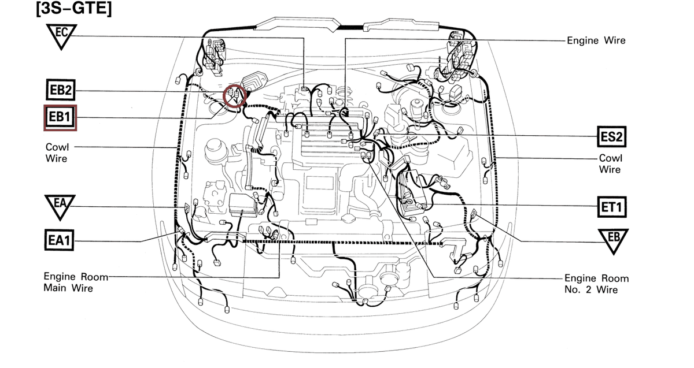
BOOK P.36Where it is. Drawing looks down from the front bumper: firewall at the top, the car's right (passenger) side on the left of the picture. EB1 and EB2 sit together inside the red circle.
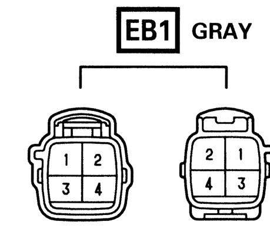
BOOK P.37Connector face. Two halves of one gray 4-pin joint. Pin numbers mirror between the halves.
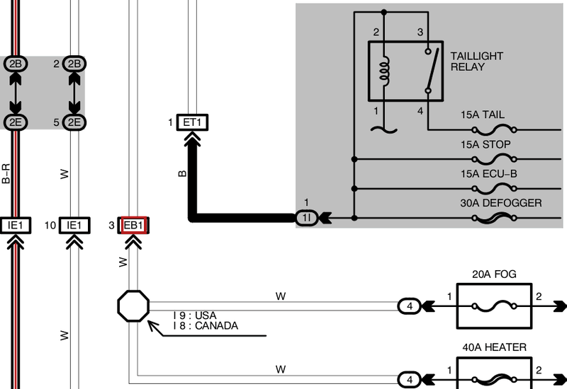
BOOK P.62Pin 3 (W). Power Source page. The white wire leaves EB1-3, hits splice I9, and feeds two fuses in R/B No.4 (the circled 4s).
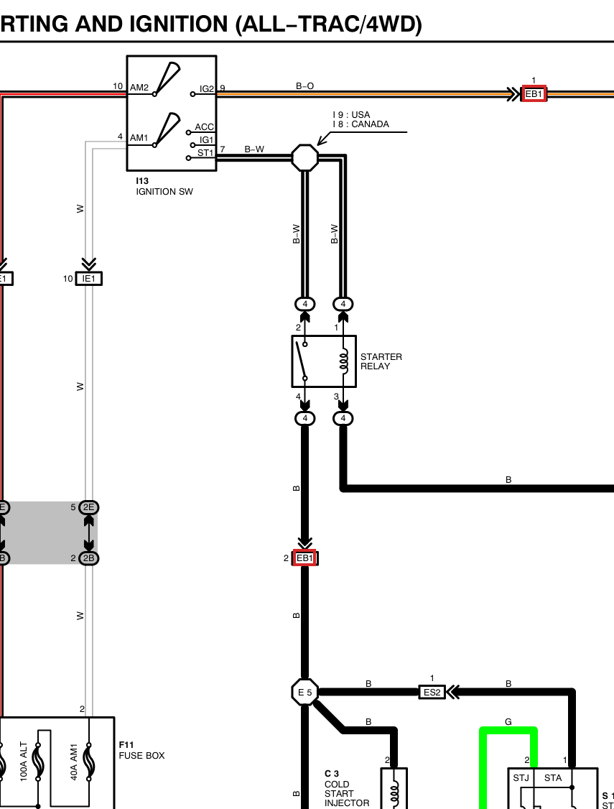
BOOK P.66Pins 1 and 2. Starting & Ignition (All-Trac). Top: ignition switch I13 pin 9 (IG2) runs B-O straight to EB1-1. Middle: the starter relay (in R/B No.4, the circled 4s) sends B down to EB1-2, then splice E5 feeds the starter, cold-start injector and ES2.
Every wire, end to end
Kept stays in the car (Cowl Wire) Gone leaves with the Engine Wire Cut + cap proposed Your pick open question
Side
From connector
Pin
Wire
To connector
Pin
Wire
Action
EB1-1 · IG2, unfused, live with the key ON
Kept
I13 Ignition SW
9 (IG2)
B-O
→
EB1 (cowl half)
1
B-O
Cut + cap
Decided 2026-10-20: cut + cap behind the plug. The new engine harness gets key-ON power from the glove-box LOGIC box.
EB1-3 · R/B No.4 power feed (from the 100A ALT link)
Gone
F11 fuse box (100A ALT)
A-3
W
→
E8 → EB1 (engine half)
3
W
Leaves with the Engine Wire
Kept
EB1 (cowl half)
3
W
→
I9 → R/B4 40A HEATER I9 → R/B4 20A FR FOG
1 1
W
Cut + cap
Decided 2026-10-20: R/B4 is fed by a short new cabin wire from a glove-box POWER fuse. Fuse size comes from the OEM W wire gauge at the car.
EB1-4 · Empty on the 3S-GTE
Check at the car
EB1-1: the drawings show B-O leaving ignition switch pin 9 twice (to EB1 and to J/B1 1A-5, the 7.5A IGN fuse). Confirm it is one lead spliced inside the Cowl Wire before capping.
Decided
R/B No.2, 3 and 4 stay (they are in the cabin). Every wire into the engine bay is new and follows the one main engine-harness route. EB1 is fully dead: all 3 pins cut + capped on the cabin side. R/B4 is fed from the glove box.
Group 2 of 8 · 1 live wire
ET1 · Engine Room Main ↔ Engine Wire
Where:left front, next to J/B No.2 (by the battery)
Housing:gray, 1 cavity
Job:the main power feed for J/B No.1
Today
Battery
J/B No.2 (engine bay), 100A ALT fuse
white wire, Engine Wire
ET1 plug by J/B No.2
black wire, Engine Room Main, through the firewall
J/B No.1 plug 1I pin 1
taillight relay, STOP, ECU-B, DEFOGGER fuses
After
Battery
glove-box POWER box, 60 A fuse "JB1"
new red 6 AWG wire, behind the dash
J/B No.1 plug 1I pin 1
same fuses as today
The old black wire from 1I back to ET1 gets disconnected and capped, so it carries nothing.
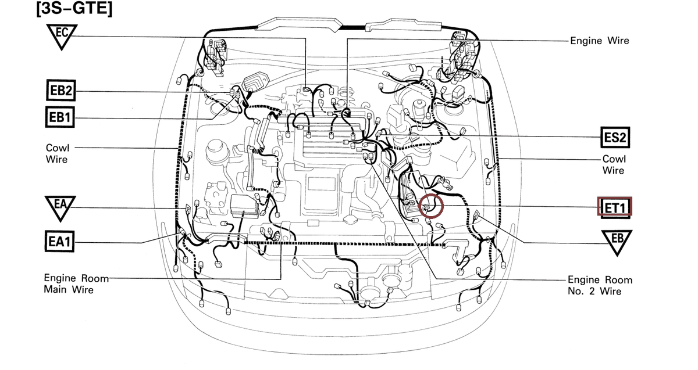
BOOK P.36Where it is. Same view as group 1: firewall at the top, so the car's left (driver) side is on the right of the picture. ET1 sits beside J/B No.2.
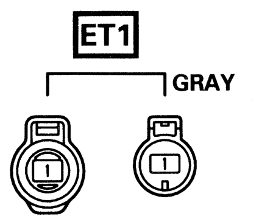
BOOK P.37Connector face. Gray, one pin, one heavy wire.
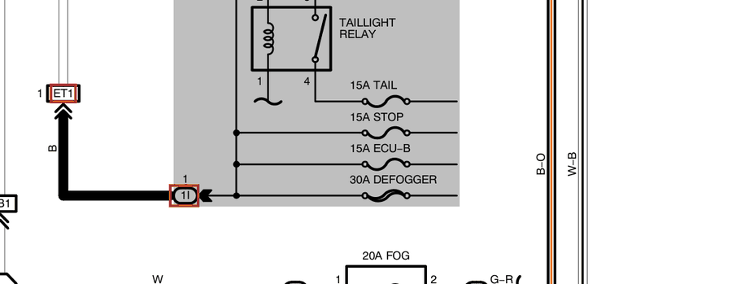
BOOK P.62The circuit. The heavy black wire from ET1 lands on J/B No.1 plug 1I pin 1. It feeds the taillight relay and the STOP, ECU-B and DEFOGGER fuses.
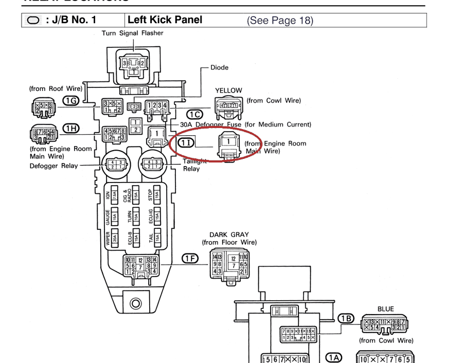
BOOK P.20Where it lands. J/B No.1 in the left kick panel. The circled one-pin plug 1I is "from Engine Room Main Wire": that is where the new feed goes.
Every wire, end to end
Side
From connector
Pin
Wire
To connector
Pin
Wire
Action
ET1-1 · J/B No.1 main feed, battery power, always live
Gone
F11 fuse box (100A ALT)
A-3
W
→
E8 → ET1 (engine half)
1
W
Leaves with the Engine Wire
Kept
ET1 (ER Main half)
1
B
→
J/B1 plug 1I
1
B
Cut + cap
Decided 2026-10-20: cut the old black wire 6 in from the 1I plug, splice the new feed to that stub, cap the long old end. ET1 goes dead.
New
POWER box AMI OUT
5
Red 6 AWG
→
J/B1 plug 1I
1
—
Master row w_pdb_jb1. Route fix below.
Flag: route
The master runs this new 6 AWG feed through the engine room (about 2 m on harness EngineRoom-C), left over from the full-rebuild plan. Under B9 it stays in the cabin: glove box, behind the dash, to the left kick panel. That fix goes in the add list (Step 5).
Check at the car
Measure the old black 1I lead's gauge. It decides whether the 6 in pigtail we keep on the 1I plug is big enough for the 60 A fuse (B12 allows a fuse-sized splice and a pigtail of 150 mm or less).